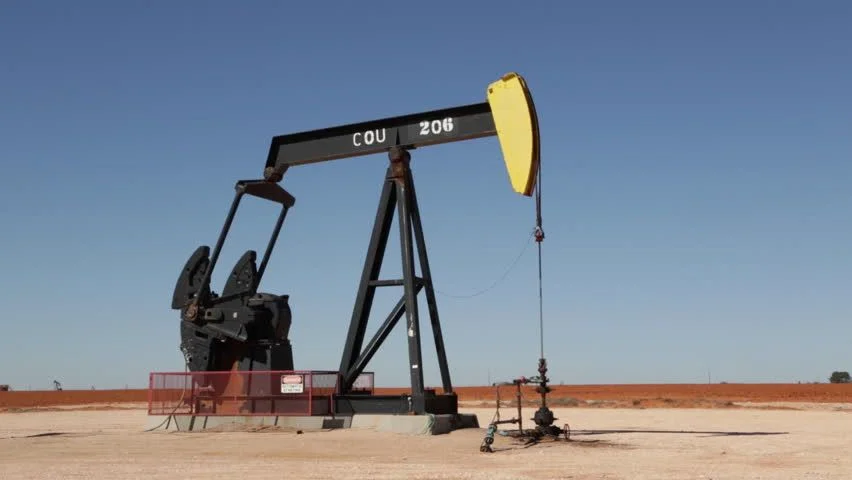
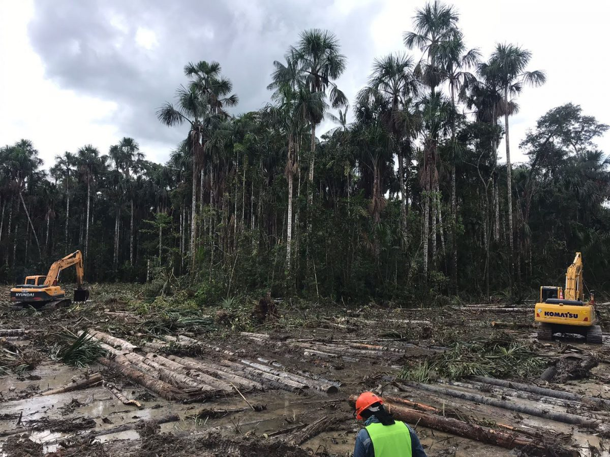
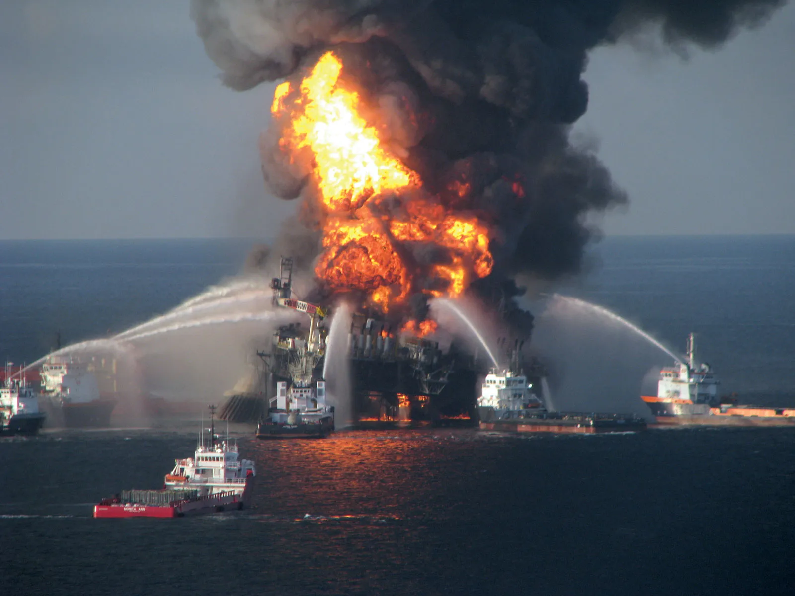
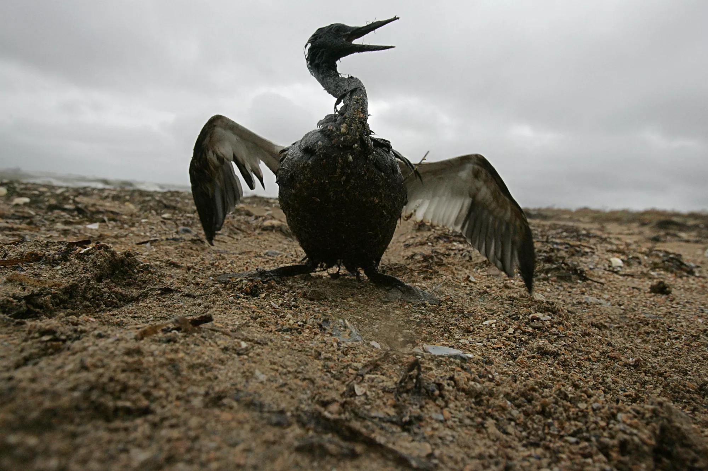
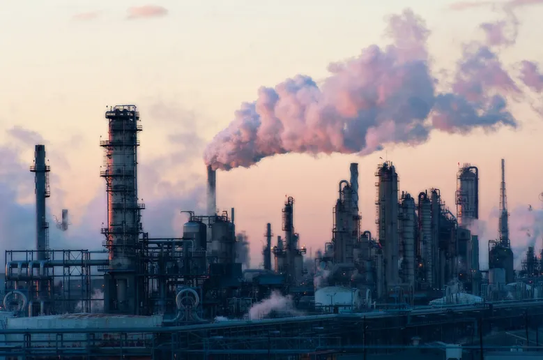
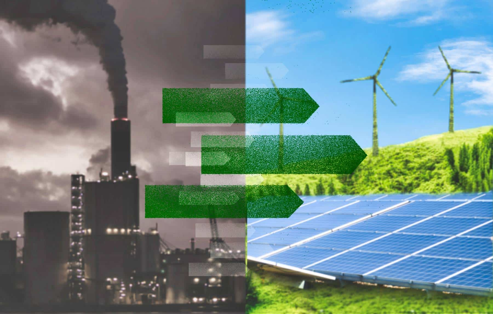

Conséquences de l'exploitation du pétrole
sur l'environnement et la santé
Bonjour à tous. Aujourd'hui, je vais vous présenter les conséquences souvent cachées de l'exploitation du pétrole sur notre environnement et sur notre santé.
1. L'exploitation du pétrole

Le pétrole est une ressource fossile formée il y a des millions d’années à partir de restes d’organismes marins. Aujourd’hui, il reste l’une des sources d’énergie les plus utilisées dans le monde.
Grâce à des machines comme celle que vous voyez sur l’image, on extrait le pétrole du sous-sol. Cette activité a permis le développement industriel rapide du XXᵉ siècle, la généralisation de la voiture, de l’avion et de nombreux produits en plastique. Mais ce progrès a un coût très élevé que nous commençons seulement à mesurer pleinement.
2. Plateformes offshore

Une grande partie du pétrole mondial est extraite en mer sur des plateformes offshore comme celle-ci. Ces installations sont impressionnantes par leur taille et leur complexité technique.
Cependant, travailler en pleine mer augmente considérablement les risques d’accidents. Quand un problème survient, les conséquences peuvent être catastrophiques pour l’océan et les côtes, comme nous le verrons plus tard.
3. Impacts environnementaux - Déforestation

Pour accéder aux gisements de pétrole, les entreprises doivent souvent ouvrir des routes en pleine forêt tropicale. L’image que vous voyez montre les conséquences dramatiques de cette déforestation en Amazonie.
Cela entraîne la destruction d’habitats naturels, la disparition de nombreuses espèces animales et végétales, et une perte importante de biodiversité. De plus, les sols deviennent vulnérables à l’érosion et à la pollution par les produits chimiques utilisés lors de l’extraction.
4. Les grandes catastrophes maritimes

L’un des accidents les plus graves de l’histoire récente est celui de Deepwater Horizon en 2010. Une explosion sur une plateforme a provoqué l’une des plus grandes marées noires jamais enregistrées.
Près de 600 000 tonnes de pétrole se sont déversées dans le Golfe du Mexique. Cet événement a rappelé au monde entier à quel point l’exploitation du pétrole en mer peut être dangereuse et difficile à contrôler.
5. Conséquences sur la faune marine

Voici l’une des images les plus choquantes de l’impact du pétrole : un oiseau complètement recouvert de pétrole après une marée noire.
Le pétrole colle les plumes, empêche les oiseaux de voler et de se nourrir, et provoque souvent une mort lente et douloureuse. Des milliers d’oiseaux, de dauphins, de tortues et de poissons meurent à chaque grande marée noire. Même des années après, les écosystèmes marins restent perturbés.
6. Pollution de l’air et impacts sur la santé

Les raffineries comme celle que vous voyez rejettent continuellement dans l’air des particules fines, des oxydes d’azote et d’autres substances toxiques.
Selon l’Organisation Mondiale de la Santé, la pollution de l’air liée aux combustibles fossiles est responsable d’environ 7 millions de morts prématurées chaque année dans le monde. Près des zones d’extraction et de raffinage, les populations locales souffrent davantage de maladies respiratoires, de cancers et de troubles neurologiques.
7. Conclusion – Vers une transition énergétique

Le pétrole a apporté beaucoup de confort et de progrès à notre société, mais il est aujourd’hui clair que nous ne pouvons plus continuer sur cette voie sans mettre en danger notre planète et notre santé.
La solution passe par une réduction progressive de notre dépendance aux énergies fossiles et par une transition sérieuse vers les énergies renouvelables comme le solaire et l’éolien. Cela demande des efforts collectifs : gouvernements, entreprises et citoyens.
En conclusion, il est urgent d’agir maintenant pour préserver l’environnement et garantir un avenir plus sain aux générations futures.